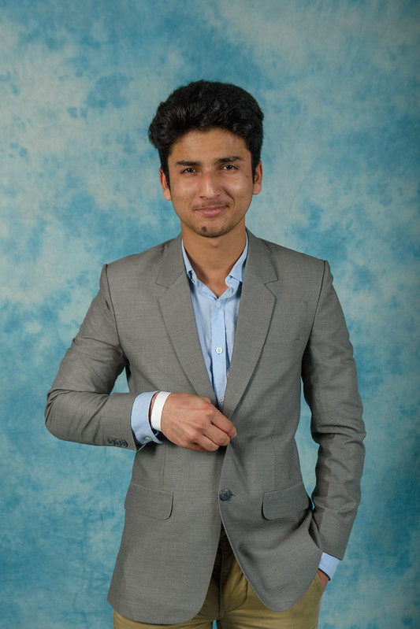

Haseeb Raza

Summary
As a neophyte in the realm of computer science, I am fervently devoted to acquiring a comprehensive comprehension of coding languages and software development.
Education
- Primary Education, LAES Kamalia (2009-2017)
- Matriculation , Ravian science high school Kamalia (2017-2019)
- Collge , PST postgraduate college Kamalia (2019-2021)
- Bachelor of Computer Sciencce, - ELTE university (2022-2026)
Experiences
-
Student Mentor - Hallgatói Önkormányzatok Országos Konferenciája
Aug 2023 - Present
- Assist upcoming Stipendium Hungaricum Scholars in their educational problem and challenges
- Help in administrative and official procedures: Visa, Healthcare, Taxes, Banking etc
- Ease the transition to a foreign environment and help with institutional integration
-
Service worker - Burger King
Jan 2023 - August 2023
- Making the burgers in the kitchen
- managing the food items count and their delivery in Burger King
Skills
- wordpress
- Elementor
- C sharp
- Computer Systems
Awards and Certifications
- Stipendium Hungaricum Scholarship Issued by Tempus Foundation · Sep 2022
- Award of Excellence Issued by PEEF Scholarship Pakistan · Jan 2018
Others